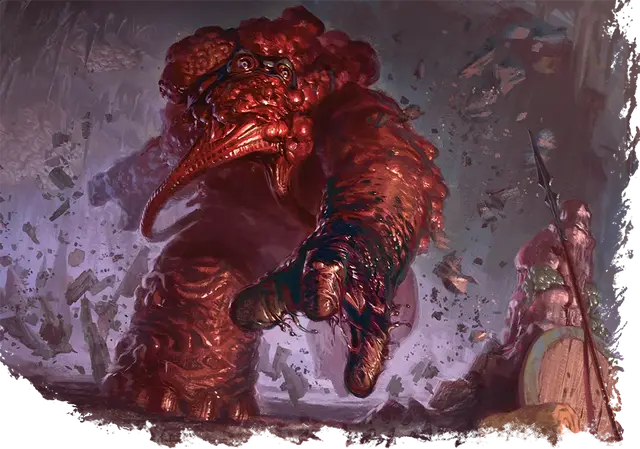

Пожиратель знаний
Eater of Knowledge
Большая Аберрация, нейтрально-злая

Класс Доспеха 15 (природный доспех)
Хиты 102 (12к10 + 36)
Скорость 40 футов
| мод | спас | ||
|---|---|---|---|
| СИЛ | 18 | +4 | +7 |
| ЛОВ | 10 | +0 | +0 |
| ТЕЛ | 17 | +3 | +3 |
| мод | спас | ||
|---|---|---|---|
| ИНТ | 18 | +4 | +7 |
| МДР | 16 | +3 | +3 |
| ХАР | 15 | +2 | +2 |
Навыки Восприятие +6, Магия +7
Иммунитет к урону психическая энергия
Иммунитет к состояниям испуг, очарование
Чувства пассивное Восприятие 16
Языки Телепатия 120 фт.
Опасность 6 (2300 опыта)
Бонус мастерства +3
Особенности
Сопротивление магии. Пожиратель знаний совершает с преимуществом спасброски от заклинаний и прочих магических эффектов.
Поглощенные мозги. При первом столкновении с пожирателем знаний бросьте 1к10, чтобы определить количество мозгов, которые он уже поглотил.
Действия
Мультиатака. Пожиратель знаний совершает две атаки Размашистым ударом. Если обе атаки попадают по одному и тому же существу и целью является существо Большого размера или меньше, оно становится схваченным (Сл высвобождения 14) и должно преуспеть в спасброске Интеллекта Сл 15, иначе станет ошеломлённым до окончания захвата.
Размашистый удар. . Рукопашная атака оружием: +7 к попаданию, досягаемость 5 футов, одна цель. Попадание: 11 (2к6 + 4) дробящего урона.
Извлечение мозга. . Рукопашная атака оружием: +7 к попаданию, досягаемость 5 футов, один недееспособный гуманоид. Попадание: Цель получает 45 (10к8) колющего урона. Если этот урон уменьшает хиты цели до 0, пожиратель знаний убивает цель, извлекая и пожирая её мозг.
Использование заклинаний (Псионика). Пожиратель знаний накладывает одно из следующих заклинаний, не нуждаясь в материальных компонентах, используя Интеллект в качестве базовой характеристики (Сл спасброска заклинания 15). Он расходует необходимое количество мозгов для накладывания заклинания, как указано:
1/день:. уход в иной мир [plane shift] (только на себя, 0 мозгов), обнаружение магии [detect magic] (1 мозг), безмолвный образ [silent image] (2 мозга), невидимость [invisibility] (3 мозга), гипнотический узор [hypnotic pattern] (4 мозга), образ [major image] (5 мозга), телекинез [telekinesis] (6 мозгов), магический глаз [arcane eye] (7 мозгов), фальшивый двойник [mislead] (8 мозгов), высшая невидимость [greater invisibility] (9 мозгов), множественное внушение [mass suggestion] (10 или более мозгов)
Описание
"Шеф, лучше всего просто забудьте все идиомы, которые вы когда-либо учили. Например, во Внешних землях "пища для мозга", скорее всего, означает тебя”.
– Морте
Первоначально созданные богом-свежевателей разума - мозгом Илсенсином, а теперь создаваемые некоторыми последователями этого бога, пожиратели знаний представляют собой неуклюжие двуногие массы хлюпающих мышц и обнаженного мозгового вещества. Эти морщинистые туши забирают информацию у других, пожирая мозги, прежде чем вернуться к своим хозяевам с вкусными секретами. В отличие от иллитидов, которые подавляют своих врагов псионической мощью, пожиратели знаний используют свою физическую силу, чтобы удерживать добычу, в то время как мощные питающие щупальца вскрывают черепа жертв. Поглощение мозгов подпитывает псионическую силу этих тварей, делая пожирателей знаний всё более смертоносными с каждым съеденным мозгом.